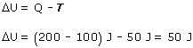
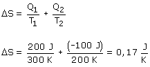

|  La energía interna del sistema ha aumentado (Sube la temperatura)  La entropía del sistema ha aumentado, como el proceso es reversible la entropía del entorno habrá disminuido en la misma cantidad y la entropía del Universo no cambiará Si el proceso fuera irreversible la entropía del entorno disminuiría menos de lo que aumenta la del sitema de forma que la entropía del Universo crecería |